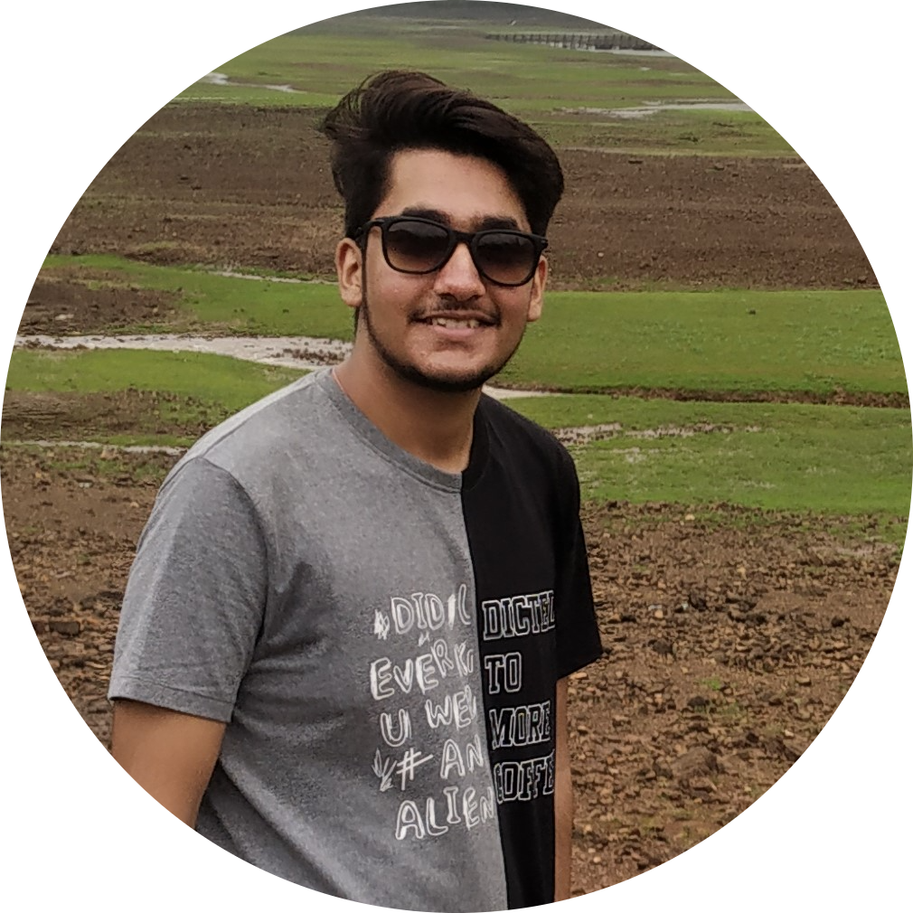
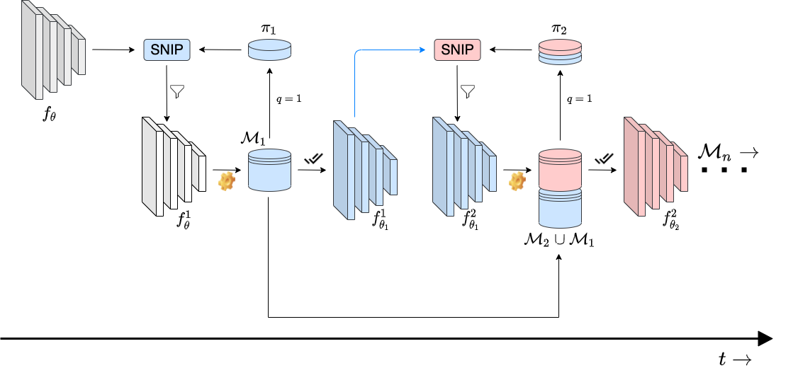
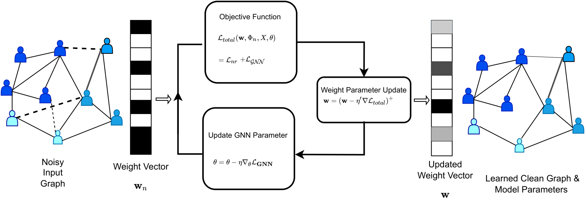
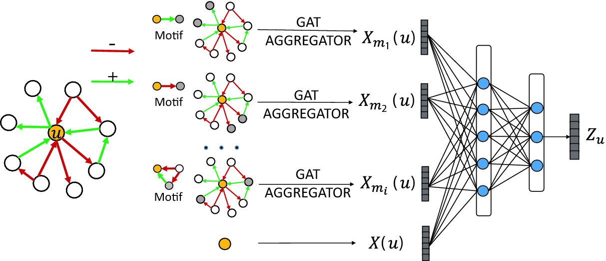
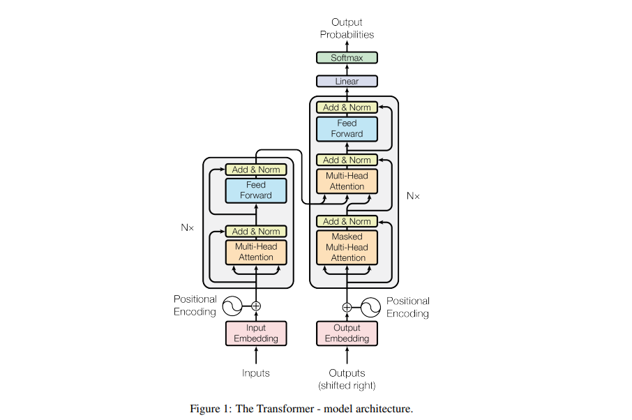
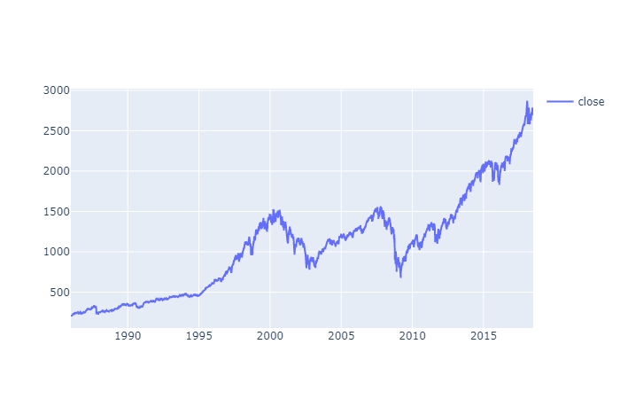
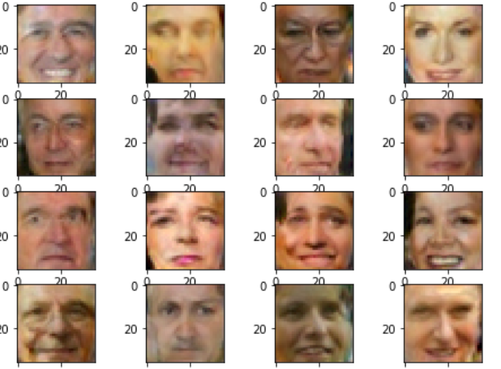
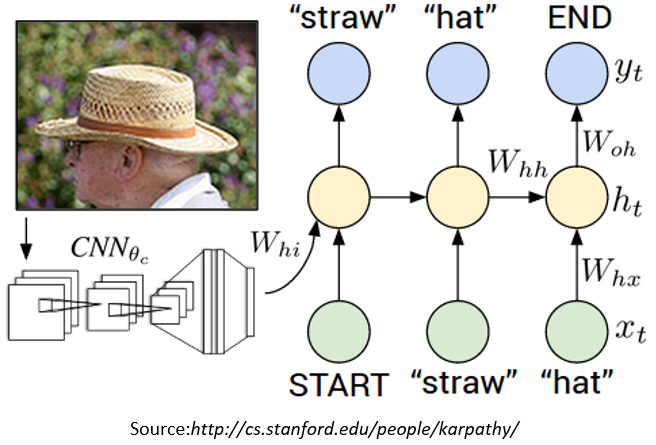

|
Bharat Runwal
I recently graduated from IIT Delhi with B.Tech in Electrical Engineering (Power And Automation). At IITD i was the member of MISN group, where I completed my B.Tech thesis "Robustifying GNN against Adversarial Attacks" under the guidance of Prof. Sandeep Kumar .
My research interest spans Adversarial Robustness, Network Sparsity, Continual learning. However, I'm always open to explore new research directions, and develop interesting real-world projects.
In the past I have been fortunate to work with the Prof. Gerad De Melo from HPI Potsdam, Germany in the field of NLP, Prof. Özgür B. Akan and Dr Oktay Cetinkaya in the domain of Molecular Communication.
Email /
CV /
Google Scholar /
Twitter /
Linkedin /
Github
|

|
 |
APP: Anytime Progressive Pruning New!
Diganta Misra*,
Bharat Runwal*,
Tianlong Chen,
Zhangyang Wang,
Irina Rish
DyNN workshop at ICML,2022
project /
paper /
webpage /
abstract /
bibtex
With the latest advances in deep learning, there has been a lot of focus on the online learning paradigm due to its relevance in practical settings. Although many methods have been investigated for optimal learning settings in scenarios where the data stream is continuous over time, sparse networks training in such settings have often been overlooked. In this paper, we explore the problem of training a neural network with a target sparsity in a particular case of online learning: the anytime learning at macroscale paradigm (ALMA). We propose a novel way of progressive pruning, referred to as \textit{Anytime Progressive Pruning} (APP); the proposed approach significantly outperforms the baseline dense and Anytime OSP models across multiple architectures and datasets under short, moderate, and long-sequence training. Our method, for example, shows an improvement in accuracy of $\approx 7\%$ and a reduction in the generalization gap by $\approx 22\%$, while being $\approx 1/3$ rd the size of the dense baseline model in few-shot restricted imagenet training. We further observe interesting nonmonotonic transitions in the generalization gap in the high number of megabatches-based ALMA. The code and experiment dashboards can be accessed at \url{https://github.com/landskape-ai/Progressive-Pruning} and \url{https://wandb.ai/landskape/APP}, respectively.
@misc{misra2022app,
title={APP: Anytime Progressive Pruning},
author={Diganta Misra and Bharat Runwal and Tianlong Chen and Zhangyang Wang and Irina Rish},
year={2022},
eprint={2204.01640},
archivePrefix={arXiv},
primaryClass={cs.LG}
}

![](https://img.shields.io/badge/Dashboard-WandB?style=flat&color=black&logo=)
|
 |
Robustifying GNN Via Weighted Laplacian New!
Bharat Runwal,
Vivek Dahiya,
Sandeep Kumar
SPCOM, 2022
|
|  |
Weighted Signed Graph Attention Networks
Nov'21
Enhanced the learned embeddings of the network nodes by adapting the loss function of the SiGAT Model to the weighted signed graph.
The learned embeddings shows better inter class seperability in the embeddings space.
|
 |
Abstractive Summarization Methods analysis on AMI meeting Corpus
May'21
This project involves generating summaries of AMI meeting transcripts. The analysis of different methods proposed for abstractive summarization using SOTA Language models is provided and also tried to tackle the problem of summarization on longer documents in the case of AMI meeting corpus.
|
 |
Anomaly Detection in Time series Data of S&P 500
May'20
This project is Anomaly detection in closing prices of S&P500(Stock market index) time series data using LSTM autoencoder.As LSTM network is best for time series Data so i trained a LSTM autoencoder using the Keras API with Tensorflow 2 as the backend to detect anomalies (Sudden price changes) in the S&P 500 index.
|
 |
Face Generation using GAN
Apr'21
Used two Networks here one is Generator which takes random noise for inspiration and tries to generate a face sample.Second is Discriminator which takes a face sample and tries to tell if it’s real or fake. i.e it predicts the probability of input image being a real face.There is snippet attached of generated faces from trained model after training for 15k iterations.
|
 |
Deep Learning Projects
Implementation of other projects : Fake News Detection using LSTM, Image Captioning, Image-Steganography-using-lsb
|
|
{kind=link}